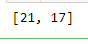

היי,
כיצד אנחנו אמורים לקבל את הרשימה בשאלה זו? האם צריך להיות קלט של input או שאפשר לכתוב משתנה שמכיל את הרשימה של הטאפלס שאנחנו רוצים לבדוק?
תודה!
“כתבו פונקציה שמקבלת רשימה של צעדים ומחזירה את מיקום המטמון.”
לא כתוב שום דבר על קבלת קלט מהמשתמש, אז אין צורך לקבל קלט מהמשתמש
2 לייקים
היי,
דווקא לי יש שאלה על הפלט.
האם זה בסדר להחזיר רשימה עם שני אברים ?
לדוגמא:

נשמע נחוץ, לא? אני הייתי בוחר דווקא ב¯tuple כנראה
אפשר להניח תקינות קלט?
ממתי בתרגילים שלנו לא היה ניתן להניח תקינות קלט?
בהמשך לשאלה עם האינפוט, בפורלולה כן נתתי אופציה לאינפוט רק כדי שיהיו כמה ניחושים שאפשר יהיה לתת. זה לא טוב? פשוט לרשום כמה דוגמאות בקוד במקום? @Yam
בבקשה לא לתייג אותי. אני רואה את כל ההודעות בפורום.
אפשר לתת אופציה ל־input רק שבבקשה תהיה הפרדה מתאימה לפונקציות, ושה־input לא תהיה בתוך הפונקציה שמחשבת את התוצאה
לייק 1
אוקי תודה. סורי, פשוט שאלתי את זה בנושא אחר ולמרות שענתה לי מישהי נחמדה, היא לא צוות ואני לא רוצה לעשות טעויות מפגרות  בכל אופן, לא אתייג
בכל אופן, לא אתייג
מבטיח להשתדל לענות להכל בכ"מ גם בלי